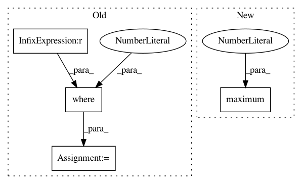

dd1c386c8f5c2e223b27f16f67e1c603b83eb449,lib/matplotlib/projections/geo.py,InvertedLambertTransform,transform_non_affine,#InvertedLambertTransform#Any#,492
Before Change
clong = self._center_longitude
clat = self._center_latitude
p = np.sqrt(x*x + y*y)
p = np.where(p == 0.0, 1e-9, p)
c = 2.0 * np.arcsin(0.5 * p)
sin_c = np.sin(c)
cos_c = np.cos(c)
After Change
y = xy[:, 1:2]
clong = self._center_longitude
clat = self._center_latitude
p = np.maximum(np.hypot(x, y), 1e-9)
c = 2 * np.arcsin(0.5 * p)
sin_c = np.sin(c)
cos_c = np.cos(c)
In pattern: SUPERPATTERN
Frequency: 3
Non-data size: 4
Instances
Project Name: matplotlib/matplotlib
Commit Name: dd1c386c8f5c2e223b27f16f67e1c603b83eb449
Time: 2018-10-06
Author: anntzer.lee@gmail.com
File Name: lib/matplotlib/projections/geo.py
Class Name: InvertedLambertTransform
Method Name: transform_non_affine
Project Name: google-research/google-research
Commit Name: 7970d5d122436c48dba4cead0d6dd20c241b5e28
Time: 2021-01-05
Author: barron@google.com
File Name: jaxnerf/nerf/model_utils.py
Class Name:
Method Name: piecewise_constant_pdf
Project Name: matplotlib/matplotlib
Commit Name: dd1c386c8f5c2e223b27f16f67e1c603b83eb449
Time: 2018-10-06
Author: anntzer.lee@gmail.com
File Name: lib/matplotlib/projections/geo.py
Class Name: LambertTransform
Method Name: transform_non_affine